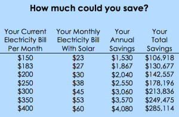

Sunlight is free, so the savings can be significant when you install a solar energy system from GoSolar. The average single family home in California uses about 9,600 kWh electric energy every year. This equals an electricity bill of approximately $2,200 at today’s utility rates. With a properly sized and designed solar energy system, this can usually be reduced by more than 80%. That means the average family in California can save over $1,800 every year by simply switching to solar energy. Over the life of a solar energy system, which is at least 20 years (most solar panel manufacturers provide a guarantee of at least 20 years on their equipment), it is possible to save over $100,000 if the monthly savings are invested at 8%.
Check your actual estimated savings with our Solar Energy Calculator.
The federal government supports the switch to solar energy by offering a 30% tax credit for the year in which you install your solar energy system. This means you will pay about $5,000 less in taxes when you install an average size solar energy system from GoSolar.
A study conducted by the Lawrence Berkeley National Laboratory shows that “California homes with a solar energy system sell for a premium over homes without a solar energy system”. The study finds that the increase in value is approximately $5,500 per installed kW. That means installing an average size solar energy system will increase the value of your home immediately by approximately $25,000. This increase is typically more than the cost of the solar energy system, so you are immediately in the black.
Solar panels convert sunlight into the same electric energy you are currently getting from your utility company. With a solar energy system from GoSolar you can generate your own electricity for your home or business and greatly reduce or completely eliminate the need for electric power from the utility company.
Because the solar energy system is connected to the grid, your home or business will still get electricity from the utility company even if the system doesn’t produce enough, for example on days with bad weather or during the night. On sunny days though, the solar energy system will serve excess energy back to the power grid. Then the power meter will actually spin backwards and you will get credit for all excess electric energy produced! At the end of the month you may even get money back from the utility company if you use less energy than your system generates!
Sunlight is clean, unlimited and free. Unlike oil, coal, uranium and natural gas, which are limited and non-renewable but currently provide over 90% of our energy, sunlight is abundant. Every hour the sun shines on our planet is equal to the amount of energy used by the entire human population in a full year. It’s just there for us to use; we don’t have to dig it up or drill for it, and we will never run out of it – at least not for the next 5 billion years. So by switching to solar energy you can not only save a lot of money, reduce your taxes and increase the value of your home, you can also help to protect our environment and reduce our dependence on expensive, non-renewable energy sources, like oil, natural gas, coal and uranium.